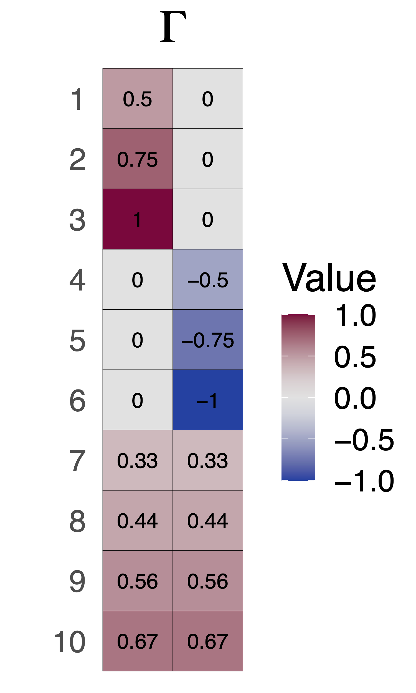
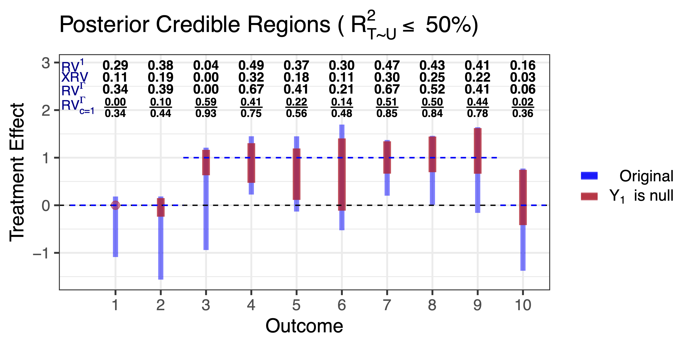
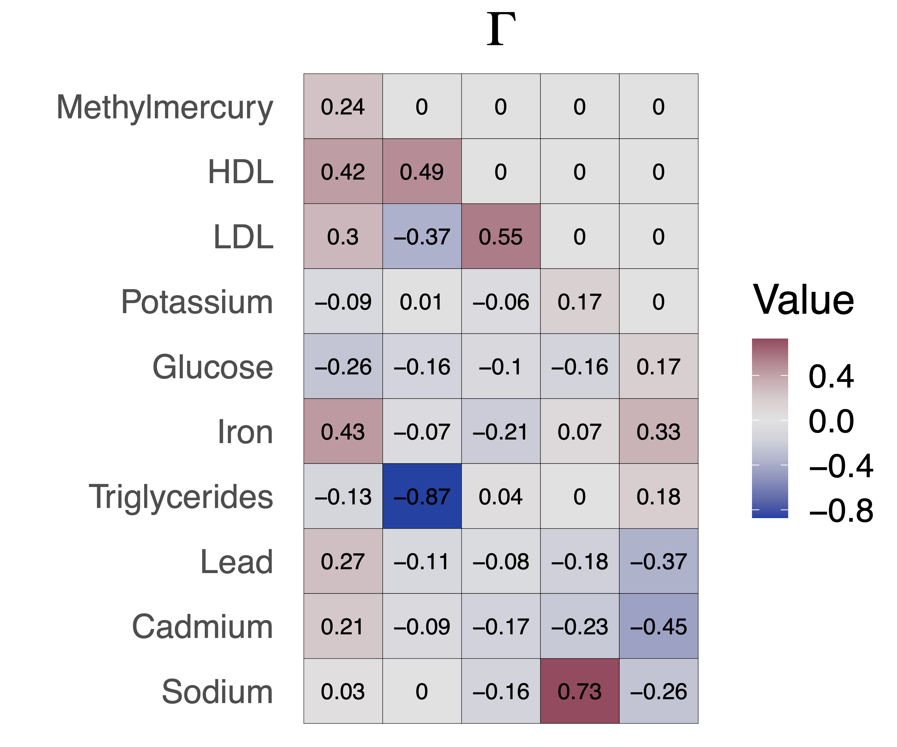
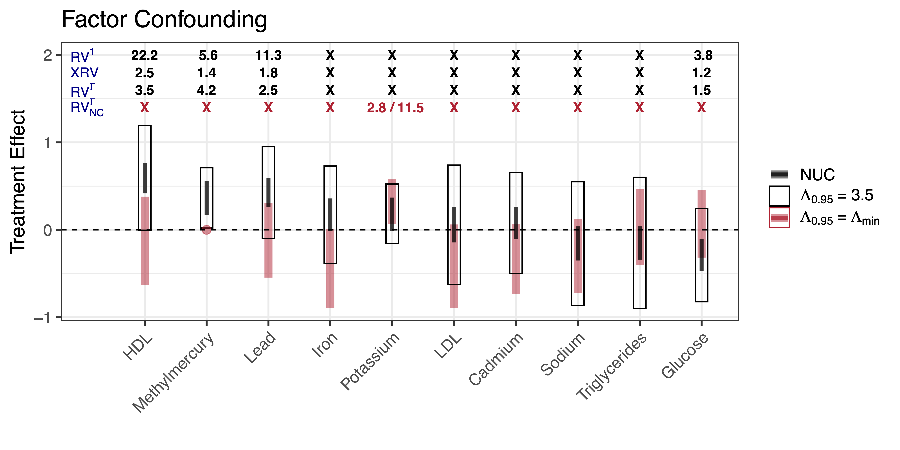

2/13/23
Consider a treatment \(T\) and outcome \(Y\)
Interested in the population average treatment effect (PATE) of \(T\) on \(Y\): \[E[Y | do(T=t)] - E[Y | do(T=t')]\]
Observational data from the National Health and Nutrition Examination Study (NHANES) on alcohol consumption.
Light alcohol consumption is positively correlated with blood levels of HDL (“good cholesterol”)
Define “light alcohol consumption’’ as 1-2 alcoholic beverages per day
Non-drinkers: self-reported drinking of one drink a week or less
Control for age, gender and indicator for educational attainment
Call:
lm(formula = Y[, "HDL"] ~ drinking + X)
Residuals:
Min 1Q Median 3Q Max
-5.0855 -0.6127 -0.0512 0.6389 4.2383
Coefficients:
Estimate Std. Error t value Pr(>|t|)
(Intercept) 0.225550 0.091105 2.476 0.013412 *
drinking 0.597399 0.091917 6.499 1.11e-10 ***
Xage 0.006409 0.001452 4.415 1.09e-05 ***
Xgender 0.689557 0.049426 13.951 < 2e-16 ***
Xeduc 0.194338 0.051161 3.799 0.000152 ***
---
Signif. codes: 0 '***' 0.001 '**' 0.01 '*' 0.05 '.' 0.1 ' ' 1
Residual standard error: 0.9216 on 1434 degrees of freedom
Multiple R-squared: 0.1531, Adjusted R-squared: 0.1507
F-statistic: 64.81 on 4 and 1434 DF, p-value: < 2.2e-16
Call:
lm(formula = Y[, "Methylmercury"] ~ drinking + X)
Residuals:
Min 1Q Median 3Q Max
-2.3570 -0.7363 -0.0728 0.6242 4.1127
Coefficients:
Estimate Std. Error t value Pr(>|t|)
(Intercept) 0.442044 0.096385 4.586 4.91e-06 ***
drinking 0.364096 0.097244 3.744 0.000188 ***
Xage 0.008186 0.001536 5.330 1.14e-07 ***
Xgender -0.062664 0.052290 -1.198 0.230966
Xeduc 0.269815 0.054126 4.985 6.95e-07 ***
---
Signif. codes: 0 '***' 0.001 '**' 0.01 '*' 0.05 '.' 0.1 ' ' 1
Residual standard error: 0.975 on 1434 degrees of freedom
Multiple R-squared: 0.05209, Adjusted R-squared: 0.04945
F-statistic: 19.7 on 4 and 1434 DF, p-value: 8.41e-16
Pearson's product-moment correlation
data: hdl_fit$residuals and mercury_fit$residuals
t = 3.7569, df = 1437, p-value = 0.0001789
alternative hypothesis: true correlation is not equal to 0
95 percent confidence interval:
0.04718758 0.14953581
sample estimates:
cor
0.0986225
Residual correlation might be indicative of confounding bias
NUC unlikely to hold exactly. What then?
Calibrate assumptions about confounding to explore range of causal effects that are plausible
Robustness: quantify how “strong” confounding has to be to nullify causal effect estimates
How do results change when we assume a priori that certain outcomes cannot be effected by treatments?
Assumption (Latent Ignorability)
U and X block all backdoor paths between T and Y (Pearl 2009)
Assumption (Latent positivity)
f(T = t | U = u, X = x) > 0 for all u and x
Assumption (SUTVA)
There are no hidden versions of the treatment and there is no interference between units
Result (Cinelli and Hazlett 2020)
Assume the outcome is linear in the treatment and confounders (no interactions). Then the squared omitted variable bias for the PATE is \[\text{Bias}_{t_1,t_2}^2 \, \leq \, \frac{(t_1-t_2)^2}{\sigma_{t\mid x}^2} \left(\frac{R^2_{T\sim U|X}}{1 - R^2_{T\sim U|X}} \right)R^2_{Y \sim U | T, X}\]
What values of \(R^2_{Y\sim U|T, X}\) and \(R^2_{T \sim U | X}\) might be reasonable?
Can use observed covariates to generate benchmark values:
Compute \(R^2_{T \sim X_{j} | X_{-j}}\) for all covariate \(X_j\)
Compute \(R^2_{Y \sim X_{j} | X_{-j}, T}\) for all covariate \(X_j\)
Use domain knowledge to reason about most important confounders
From the sensemakr documentation (Cinelli, Ferwerda, and Hazlett 2020)
Assume the observed data mean and covariance can be expressed as follows: \[\begin{align}
E[Y \mid T = t, X=x] &= \check g(t, x)\\
Cov(Y \mid T = t, X = x) &= \Gamma\Gamma' + \Lambda,
\end{align}\]
\(U\) (m-vector) and \(X\) are possible causes for \(T\) (scalar) and \(Y\) (q-vector)
\(X\) are observed but \(U\) are not.
\[\begin{align} & U = \epsilon_U \label{eqn:u}\\ &T = f_{\epsilon}(X, U) \label{eqn:treatment_general,multi-y}\\ &Y = g(T,X) + \Gamma\Sigma_{u|t,x}^{-1/2}U + \epsilon_{y}, \label{eqn:epsilon_y} \end{align}\]
\[\begin{align} &U = \epsilon_U\\ &T = f_\epsilon(X,U)\\ &Y = g(T, X) + \Gamma\Sigma_{u|t,x}^{-1/2}U + \epsilon_{y} \end{align}\]
Confounding bias is \(\Gamma\Sigma_{u|t,x}^{-1/2}\mu_{u \mid t,x}\)
\(\mu_{u \mid t,x}\) and \(\Sigma_{u|t,x}\) are the conditional mean and covariance of the unmeasured confounders
\[\begin{align} \mu_{u\mid t,x} &= \frac{\rho}{\sigma_{t \mid x}^{2}}\left(t-\mu_{t\mid x}\right) \label{eqn:conditional_u_mean}, \\ \Sigma_{u \mid t,x} &= I_m-\frac{\rho \rho^{\prime}}{\sigma_{t\mid x}^{2}} \label{eqn:conditional_u_cov}, \end{align}\]
\(\rho\) is the partial correlation vector between \(T\) and \(U\)
\(0 \leq R^2_{T \sim U |X}:= \frac{||\rho||^2_2}{\sigma^2_{t\mid x}} < 1\) is the squared norm of the partial correlation between T and U given \(X\)
Assumption (Homoscedasticity)
\(Cov(Y |T = t, X = x)\) is invariant to t and x. Implies factor loadings, \(\Gamma\), are invariant to \(t\) and \(x\)
Assumption (Factor confounding)
The factor loadings, \(\Gamma\), are identifiable (up to rotation) and reflect all potential confounders. (Anderson and Rubin 1956)
To identify factor loadings, \(\Gamma\), \((q-m)^2-q-m\geq0\) and each confounder must influence at least three outcomes
Theorem (Bounding the bias for outcome \(Y_j\))
Given the structural equation model, sensitivity specification and given assumptions, the squared omitted variable bias for the PATE of outcome \(Y_j\) is bounded by \[\text{Bias}_{j}^2 \, \leq \, \frac{(t_1-t_2)^2}{\sigma_{t\mid x}^2} \left(\frac{R^2_{T\sim U|X}}{1 - R^2_{T\sim U|X}} \right)\parallel \Gamma_j\parallel_2^2\]
The bound on the bias for outcome \(j\) is proportional to the norm of the factor loadings for that outcome
A single sensitivity parameter, \(R^2_{T \sim U \mid X}\), shared across all outcomes
Theorem (Bounding the bias for outcome \(Y_j\))
Given the structural equation model, sensitivity specification and given assumptions, the squared omitted variable bias for the PATE of outcome \(Y_j\) is bounded by \[\text{Bias}_{j}^2 \, \leq \, \frac{(t_1-t_2)^2}{\sigma_{t\mid x}^2} \left(\frac{R^2_{T\sim U|X}}{1 - R^2_{T\sim U|X}} \right)\color{#C43424}{ \parallel \Gamma_j\parallel_2^2}\]
The bound on the bias for outcome \(j\) is proportional to the norm of the factor loadings for that outcome
A single sensitivity parameter, \(R^2_{T \sim U \mid X}\), shared across all outcomes
Theorem (Bounding the bias for outcome \(Y_j\))
Given the structural equation model, sensitivity specification and given assumptions, the squared omitted variable bias for the PATE of outcome \(Y_j\) is bounded by \[\text{Bias}_{j}^2 \, \leq \, \frac{(t_1-t_2)^2}{\sigma_{t\mid x}^2} \color{#C43424}{\left(\frac{R^2_{T\sim U|X}}{1 - R^2_{T\sim U|X}} \right)} \parallel \Gamma_j\parallel_2^2\]
The bound on the bias for outcome \(j\) is proportional to the norm of the factor loadings for that outcome
A single sensitivity parameter, \(R^2_{T \sim U \mid X}\), shared across all outcomes
Theorem (Bias with Null Control Outcomes)
Assume the previous structural equation model and sensitivity specification. Then the squared omitted variable bias for the PATE of outcome \(Y_j\) is bounded by
\[\begin{equation} \label{eqn:ignorance-region-gaussian-wnc,multi-y} \text{Bias}_j \in \left[\Gamma_j \Gamma_{\mathcal{C}}^{\dagger} \check{\tau}_{\mathcal{C}} \; \pm \; \parallel \Gamma_j P_{\Gamma_{\mathcal{C}}}^{\perp} \parallel_2 \sqrt{ \frac{1}{\sigma_{t\mid x}^2}\left( \frac{R^2_{T \sim U | X}}{1 - R^2_{T \sim U | X}} - \frac{R^2_{min}}{1 - R^2_{min}} \right)} \right], \end{equation}\]
If \(R^2_{T \sim U | X}=R^2_{min}\) then the bias is identified for all outcomes
Ignorance about the bias is smallest when \(\Gamma_j\) is close to the span of \(\Gamma_{\mathcal{C}}\)
Theorem (Bias with Null Control Outcomes)
Assume the previous structural equation model and sensitivity specification. Then the squared omitted variable bias for the PATE of outcome \(Y_j\) is bounded by
\[\begin{equation} \text{Bias}_j \in \left[\Gamma_j \Gamma_{\mathcal{C}}^{\dagger} \check{\tau}_{\mathcal{C}} \; \pm \; \parallel \Gamma_j P_{\Gamma_{\mathcal{C}}}^{\perp} \parallel_2 \sqrt{ \frac{1}{\sigma_{t\mid x}^2}\color{#C43424}{\left( \frac{R^2_{T \sim U | X}}{1 - R^2_{T \sim U | X}} - \frac{R^2_{min}}{1 - R^2_{min}} \right)}} \right], \end{equation}\]
If \(R^2_{T \sim U | X}=R^2_{min}\) then the bias is identified for all outcomes
Ignorance about the bias is smallest when \(\Gamma_j\) is close to the span of \(\Gamma_{\mathcal{C}}\)
Theorem (Bias with Null Control Outcomes)
Assume the previous structural equation model and sensitivity specification. Then the squared omitted variable bias for the PATE of outcome \(Y_j\) is bounded by
\[\begin{equation} \text{Bias}_j \in \left[\Gamma_j \Gamma_{\mathcal{C}}^{\dagger} \check{\tau}_{\mathcal{C}} \; \pm \; \color{#C43424}{\parallel \Gamma_j P_{\Gamma_{\mathcal{C}}}^{\perp} \parallel_2} \sqrt{ \frac{1}{\sigma_{t\mid x}^2}\left( \frac{R^2_{T \sim U | X}}{1 - R^2_{T \sim U | X}} - \frac{R^2_{min}}{1 - R^2_{min}} \right)} \right], \end{equation}\]
If \(R^2_{T \sim U | X}=R^2_{min}\) then the bias is identified for all outcomes
Ignorance about the bias is smallest when \(\Gamma_j\) is close to the span of \(\Gamma_{\mathcal{C}}\)
\(RV^\Gamma_j\) can be smaller or larger than \(RV^1\)
\(RV_j^{\Gamma} \geq XRV\) by definition
Gaussian data generating process \[\begin{align} T &= \beta' U + \epsilon_T \\ Y_j &= \tau_jT + \Gamma'\Sigma^{-1/2}_{u|t}U + \epsilon_y \end{align}\]
\(R^2_{T \sim U \mid X}=0.5\) from \(m=2\) unmeasured confounders
\(\tau_j = 0\) for \(Y_1\), \(Y_2\) and \(Y_{10}\)
\(\tau_j=1\) for all outher outcomes
Fit a Bayesian linear regression on the 10 outcomes given then treatment
Assume a residual covariance with a rank-two factor structure
Plot ignorance regions assuming \(R^2_{T \sim U} \leq 0.5\)
Plot ignorance regions assuming \(R^2_{T \sim U} \leq 0.5\) and \(Y_1\) is null


\(R^2_{T \sim U | X}\) is unnatural for binary treatments
\(\Lambda\)-parameterization \(\leftrightarrow\) \(R^2_{T \sim U | X}\)-parameterization
Fix a \(\Lambda_\alpha\) such that \[Pr\left(\Lambda_\alpha^{-1} \leq \frac{e_0(X, U)/(1-e_0(X, U))}{e(X)/(1-e(X))}\leq \Lambda_\alpha\right)=1-\alpha\]
Use age, gender and an indicator of educational attainment to benchmark
\(\frac{1}{3.5} \leq \text{Odds}(X)/\text{Odds}(X_{-age}) \leq 3.5\) for 95% of observed values
For gender and education indicators the odds change was between \(\frac{1}{1.5}\) and \(1.5\)
Assume light drinking has no effect on methylmercury levels


Prior knowledge unique to the multi-outcome setting can help inform assumptions about confounding
Sharper sensitivity analysis, when assumptions hold
Negative control assumptions can potentially provide strong evidence for or against robustness
Jiaxi Wu (top, UCSB)
Jiajing Zheng (middle, formerly UCSB)
Alex D’Amour (bottom, Google Research)
Preprint: Sensitivity to Unobserved Confounding in Studies with Factor-structured Outcomes https://arxiv.org/abs/2208.06552